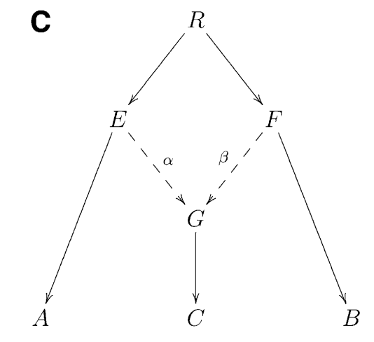
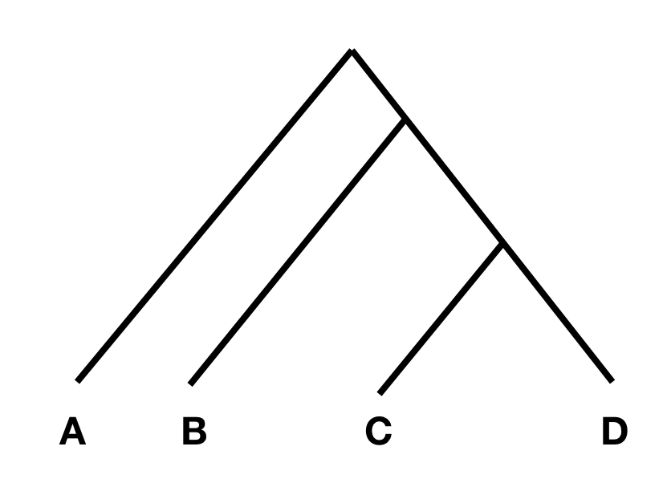
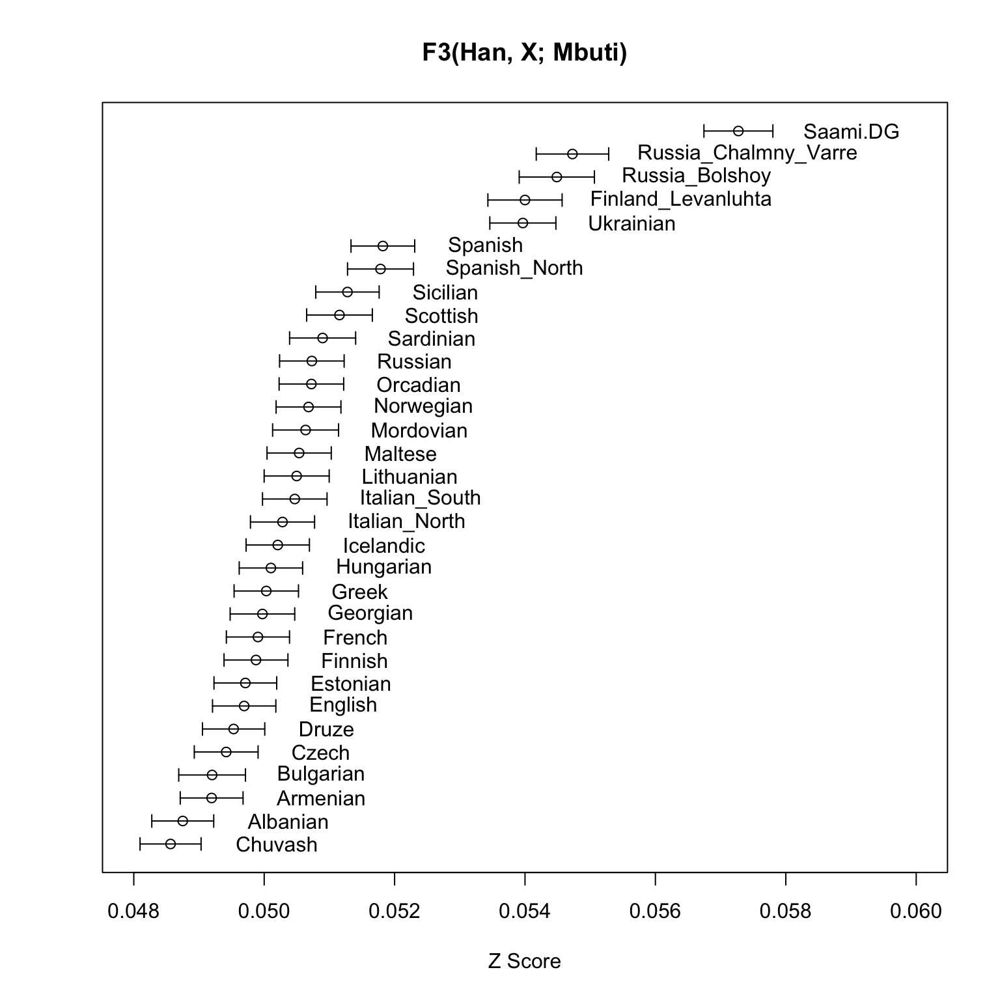

trident fetch -d /somewhere/to/store/the/archive --downloadAll 3 Introduction to F3- and F4-Statistics
3.1 Admixture - F3 Statistics
F3 statistics are a useful analytical tool to understand population relationships. F3 statistics, just as F4 and F2 statistics measure allele frequency correlations between populations and were introduced by Nick Patterson (Patterson et al. 2012), but see also (Peter 2016) for another introduction.
F3 statistics are used for two purposes: i) as a test whether a target population (C) is admixed between two source populations (A and B), and ii) to measure shared drift between two test populations (A and B) from an outgroup (C).
F3 statistics are in both cases defined as the product of allele frequency differences between population C to A and B, respectively:
\[F3(A,B;C)=\langle(c−a)(c−b)\rangle\]
Here, \(\langle\cdot\rangle\) denotes the average over all genotyped sites, and a, b and c denote the allele frequency for a given site in the three populations A, B and C.
It can be shown that if \(F3(A, B; C)\) is negative, it provides unambiguous proof that population C is admixed between populations A and B, as in the following phylogeny (taken from Figure 1 from (Patterson et al. 2012):

Intuitively, an F3 statistics becomes negative if the allele frequency of the target population C is on average intermediate between the allele frequencies of A and B. Consider as an extreme example a genomic site where \(a=0\), \(b=1\) and \(c=0.5\). Then we have \((c−a)(c−b)=−0.25\), which is negative. So if the entire statistics is negative, it suggests that in many positions, the allele frequency c is indeed intermediate, suggesting admixture between the two sources.
One way to understand this is by looking what happens to a list of SNPs and allele frequencies for groups A, B and C:
| SNP | A | B | C | \((c-a)(c-b)\) |
|---|---|---|---|---|
| 1 | 1 | 0 | 0.5 | -0.25 |
| 2 | 0.8 | 0 | 0 | 0 |
| 3 | 0 | 0.7 | 0 | 0 |
| 4 | 0.1 | 0.5 | 0.3 | -0.04 |
| 5 | 0 | 0.1 | 0.2 | 0.02 |
| 6 | 1 | 0.2 | 0.9 | -0.07 |
| \(F_3(A, B;C)\) | -0.057 |
Every SNP where C has an allele frequency intermediate between A and B contributes negatively. Here, the average is also negative, providing evidence for admixture. For statistical certainty, an error bar for this estimate is needed, which is typically computed via Jackknife (see for example the xerxes whitepaper).
Caution
If an F3 statistics is not negative, it does not proof that there is no admixture!
3.1.1 Computing Admixture-F3 with xerxes
We will use this statistics to test if Finnish are admixed between East and West, using different Eastern and Western sources. In the West, we use French, Icelandic, Lithuanian and Norwegian as source, and in the East we use Nganasan and one of the ancient individuals analysed in (Lamnidis et al. 2018), from the site of Bolshoy Oleni Ostrov from the Northern Russian Kola-peninsula, and dating to 3500 years before present.
Tip
If you happen to have downloaded a copy of the Poseidon Community Archive already, then just use the path to that archive in the following commands. Otherwise you download the entire archive via
or just the relevant packages for the examples in this chapter:
trident fetch -d /somewhere/to/store/the/archive -f "*2012_PattersonGenetics*,*2014_RaghavanNature*,*2014_LazaridisNature*,*2018_Lamnidis_Fennoscandia*"We use the software xerxes fstats from the Poseidon Framework. Here is a command line that computes 8 statistics for us:
xerxes fstats -d ~/dev/poseidon-framework/community-archive \
--stat "F3(Nganasan,French,Finnish)" \
--stat "F3(Nganasan, Icelandic, Finnish)" \
--stat "F3(Nganasan, Lithuanian, Finnish)" \
--stat "F3(Nganasan, Norwegian, Finnish)" \
--stat "F3(Russia_Bolshoy, French, Finnish)" \
--stat "F3(Russia_Bolshoy, Icelandic, Finnish)" \
--stat "F3(Russia_Bolshoy, Lithuanian, Finnish)" \
--stat "F3(Russia_Bolshoy, Norwegian, Finnish)" \
Note
Note that xerxes fstats will automatically find the right packages from your local archive that contain these groups. You can see in the output of the program which packages contribute:
[Info] 5 relevant packages for chosen statistics identified:
[Info] *2012_PattersonGenetics-2.1.3*
[Info] *2014_LazaridisNature-4.0.2*
[Info] *2016_LazaridisNature-2.1.3*
[Info] *2018_Lamnidis_Fennoscandia-2.1.0*
[Info] *2019_Flegontov_PalaeoEskimo-2.2.1*So these five packages contain the samples requested in these statistics. You can inquire about this also more manually using trident list
Here is the result that you should get, nicely layouted in a Text-table:
.-----------.----------------.------------.---------.---.---------.----------------.--------------------.------------------.---------------------.
| Statistic | a | b | c | d | NrSites | Estimate_Total | Estimate_Jackknife | StdErr_Jackknife | Z_score_Jackknife |
:===========:================:============:=========:===:=========:================:====================:==================:=====================:
| F3 | Nganasan | French | Finnish | | 593124 | -1.0450e-3 | -1.0451e-3 | 1.2669e-4 | -8.249133659451905 |
| F3 | Nganasan | Icelandic | Finnish | | 593124 | -1.1920e-3 | -1.1920e-3 | 1.3381e-4 | -8.908381869946188 |
| F3 | Nganasan | Lithuanian | Finnish | | 593124 | -1.1605e-3 | -1.1605e-3 | 1.5540e-4 | -7.4680182465607245 |
| F3 | Nganasan | Norwegian | Finnish | | 593124 | -1.0913e-3 | -1.0914e-3 | 1.3921e-4 | -7.83945981272796 |
| F3 | Russia_Bolshoy | French | Finnish | | 542789 | -6.1807e-4 | -6.1809e-4 | 1.0200e-4 | -6.059872900228102 |
| F3 | Russia_Bolshoy | Icelandic | Finnish | | 542789 | -6.2801e-4 | -6.2802e-4 | 1.1792e-4 | -5.325695961373772 |
| F3 | Russia_Bolshoy | Lithuanian | Finnish | | 542789 | -3.7310e-4 | -3.7310e-4 | 1.2973e-4 | -2.8760029685791637 |
| F3 | Russia_Bolshoy | Norwegian | Finnish | | 542789 | -3.7646e-4 | -3.7653e-4 | 1.1630e-4 | -3.2375830440434323 |
'-----------'----------------'------------'---------'---'---------'----------------'--------------------'------------------'---------------------'
Tip
Use the option -f <FILE> to output the results additionally to a tab-separated file, or --raw if you prefer the standard output to be tab-separated
You can see that in all cases this statistic is negative (Estimate_Total). The next two columns ( Estimate_Jackknife and StdErr_Jackknife) are computed using Jackknifing (see the xerxes whitepaper for details). The last column is the Z score, and it is important here: It gives the deviation of the f3 statistic from zero in units of the standard error. As general rule, a Z score of -3 or more suggests a significant rejection of the Null hypothesis that the statistic is not negative. In this case, all of the statistics are significantly negative (with one borderline exception), proving that Finnish have ancestral admixture of East and West Eurasian ancestry. Here, Eastern ancestry is represented by Nganasan or Russia_Bolshoy, respectively, while Western ancestry by French, Icelandic, Lithuanian and Norwegian, respectively. Note that the statistics does not suggest when this admixture happened!
3.1.2 Running xerxes via a configuration file
As you will have noticed, the command line above is getting quite long, since a separate --stat option has to be entered for every statistic to be computed. There is a more powerful and elegant interface to xerxes, which uses a configuration file in YAML format. To illustrate it, let us consider the configuration file (which can be found in fstats_working/F3_finnish.config in the git-repository of this book) needed to compute the same statistic as above:
fstats:
- type: F3
a: ["Nganasan", "Russia_Bolshoy"]
b: ["French", "Icelandic", "Lithuanian", "Norwegian"]
c: ["Finnish"]You can then run xerxes as
xerxes fstats -d ~/dev/poseidon-framework/community-archive --statConfig fstats_working/F3_finnish.configSo xerxes then automatically creates all combinations of populations listed in slots a, b and c.
Note
Note that there are actually three types of F3-statistics supported by xerxes:
F3vanilla: The purest form, defined literally as \(\langle(c−a)(c−b)\rangle\)F3: A bias-corrected version, which is only valid for groups in C that have non-zero heterozygosityF3star: This one is normalised by the heterozgygosity of the third population, C, as suggested in (Patterson et al. 2012) and implemented in the Admixtools package.
The white-paper explains this in detail.
Tip
The configuration file format has a lot more options. Here is a bit more complex example, but see also the documentation:
# You can define groups right within the configuration file.
# here we use negative selection to remove individuals from the
# newly defined groups
groupDefs:
CEU2: ["CEU.SG", "-<NA12889.SG>", "-<NA12890.SG>"]
FIN2: ["FIN.SG", "-<HG00383.SG>", "-<HG00384.SG>"]
GBR2: ["GBR.SG", "-<HG01791.SG>", "-<HG02215.SG>"]
IBS2: ["IBS.SG", "-<HG02238.SG>", "-<HG02239.SG>"]
fstats:
- type: F2 # this will create 2x2 = 4 F2-Statistics
a: ["French", "Spanish"]
b: ["Han", "CEU2"]
- type: F3vanilla # This will create 3x2x1 = 6 Statistics
a: ["French", "Spanish", "Mbuti"]
b: ["Han", "CEU2"]
c: ["<Chimp.REF>"]
- type: F4 # This will create 5x5x4x1 = 100 Statistics
a: ["<I0156.SG>", "<I0157.SG>", "<I0159.SG>", "<I0160.SG>", "<I0161.SG>"]
b: ["<I0156.SG>", "<I0157.SG>", "<I0159.SG>", "<I0160.SG>", "<I0161.SG>"]
c: ["CEU2", "FIN2", "GBR2", "IBS2"]
d: ["<Chimp.REF>"]
# Altogether: 110 statistics of different typeswhich will not just create multiple statistic using row-combinations, as described, but also uses newly defined groups and combines multiple statistic types (F2, F3 and F4) in one run.
3.2 F4 Statistics
A different way to test for admixture is by “F4 statistics” (or “D statistics” which is very similar), also introduced in (Patterson et al. 2012).
F4 statistics are also defined in terms of correlations of allele frequency differences, similarly to F3 statistics, but involving four different populations, not just three. Specifically we define
\[F4(A,B;C,D)=\langle(a−b)(c−d)\rangle.\]
3.2.1 Shaping intuition - the ABBA- and BABA-sites
To understand the statistics, consider the following tree:

In this tree, without any additional admixture, the allele frequency difference between A and B should be completely independent from the allele frequency difference between C and D. In that case, F4(A, B; C, D) should be zero, or at least not statistically different from zero. However, if there was gene flow from C or D into A or B, the statistic should be different from zero. Specifically, if the statistic is significantly negative, it implies gene flow between either C and B, or D and A. If it is significantly positive, it implies gene flow between A and C, or B and D.
It is helpful to again consider an example using a SNP list, this time assuming that every population is just a single (haploid) individual, so each allele frequency can just be 0 or 1. For example:
| SNP | A | B | C | D | \((a-b)(c-d)\) |
|---|---|---|---|---|---|
| 1 | 1 | 0 | 0 | 0 | 0 |
| 2 | 1 | 0 | 1 | 1 | 0 |
| 3 | 0 | 1 | 1 | 0 | -1 |
| 4 | 0 | 1 | 0 | 1 | 1 |
| 5 | 1 | 0 | 0 | 1 | -1 |
| 6 | 1 | 0 | 0 | 0 | 0 |
| \(F_4(A, B;C, D)\) | -0.0167 |
You can see that the only SNPs that contribute positively to this statistics are SNPs where the alleles are distributed as 1010 and 0101, and the only SNPs that contribute negatively are 1001 and 0110. In the literature, the two patterns have been dubbed “ABBA” and “BABA”, which is why the statistical test behind this statistic (see below) was sometimes called the ABBA-BABA test (see for example (Martin, Davey, and Jiggins 2015)).
The intuition here is straight-forward: In positions that are polymorphic in both \((A,B)\) and \((C,D)\), this statistic asks whether B is genetically more similar to C than it is to D. This is most useful as a test for “treeness”: If A, B, C, D are related to each other as indicated in the above tree, then C should be equally closely related to C as to D. But if we actually find evidence that B is closer to C than to D, or vice versa, then this means that the tree above cannot be correct, but that there must be a closer connection between B and C or B and D, depending on the sign of the statistic.
3.2.2 From single samples to allele frequencies
So the ABBA- and BABA-categories of SNPs help shape intuition for how this statistic behaves for single haploid genomes. But what about population allele frequencies? Looking back at the formula \(\langle(a−b)(c−d)\rangle\) this doesn’t help very much with intuition how this behaves with frequencies. Well, a nice feature of F4-Statistics is that averages factor out. This means, that if you have multiple samples in one or multiple slots A, B, C or D, the total F4-statistic of the groups is exactly equal to the average of F4-Statistics of the individuals. Here is a more mathematical definition.
Let’s say we have 2 individuals in each of A and B, so we may perhaps write \(A=\{A_1,A_2\}\) and \(B=\{B_1,B_2\}\). Then one can show to have
\[F4(A, B; C, D) = \text{Average of}[F4(A_1, B_1; C, D), F4(A_1, B_2; C, D), F4(A_2, B_1; C, D), F4(A_2, B_2; C, D)]\]
so just thte average over all individual-based F4-statistics. And this can be shown to be true for arbitrary numbers of samples. So in other words: An F4-Statistic always measures the average excess of pairwise BABA SNPs over ABBA SNPs. To me, this is a useful insight, as I find thinking in terms of ABBA-BABA somehow more helpful than thinking in terms of correlations of allele-frequency differences (which is really what the original formula is).
Note
F4-statistics have been famously used to show that Neanderthals are more closely related to Non-African populations than to Africans, suggesting gene-flow between Neanderthals and Non-Africans (shown in (Green et al. 2010)). You can reproduce this famous result with
xerxes fstats -d ~/poseidon_repo --stat 'F4(<Chimp.REF>,<Altai_published.DG>,Yoruba,French)' \
--stat 'F4(<Chimp.REF>,<Altai_published.DG>,Sardinian,French)'which shows that the first statistic is significantly positive with a Z-score of 7.99, while the second one is insignificantly different from zero (Z=1.01)
The way this statistic is often used, is to put a divergent outgroup as population A, for which we know for sure that there was no admixture into either C or D. With this setup, we can then test for gene flow between B and D (if the statistic is positive), or B and C (if it is negative).
3.2.3 Running F4-Statistics with xerxes
Here, we can use this statistic to test for East Asian admixture in Finns, similarly to the test using Admixture F3 statistics above. We will again use xerxes fstats. We again prepare a configuration file (in fstats_working/F4_finish.config in the git-repository of this book), this time with four populations (A, B, C, D):
fstats:
- type: F4
a: ["Mbuti"]
b: ["Nganasan", "Russia_Bolshoy"]
c: ["French", "Icelandic", "Lithuanian", "Norwegian"]
d: ["Finnish"]You can again run via
xerxes fstats -d ~/dev/poseidon-framework/community-archive --statConfig fstats_working/F4_finnish.configThe result is:
.-----------.-------.----------------.------------.---------.---------.----------------.--------------------.------------------.--------------------.
| Statistic | a | b | c | d | NrSites | Estimate_Total | Estimate_Jackknife | StdErr_Jackknife | Z_score_Jackknife |
:===========:=======:================:============:=========:=========:================:====================:==================:====================:
| F4 | Mbuti | Nganasan | French | Finnish | 593124 | 2.3114e-3 | 2.3115e-3 | 1.2676e-4 | 18.235604067907143 |
| F4 | Mbuti | Nganasan | Icelandic | Finnish | 593124 | 1.6590e-3 | 1.6590e-3 | 1.4861e-4 | 11.163339072181776 |
| F4 | Mbuti | Nganasan | Lithuanian | Finnish | 593124 | 1.3290e-3 | 1.3290e-3 | 1.4681e-4 | 9.052979707622278 |
| F4 | Mbuti | Nganasan | Norwegian | Finnish | 593124 | 1.6503e-3 | 1.6503e-3 | 1.5358e-4 | 10.745850997260929 |
| F4 | Mbuti | Russia_Bolshoy | French | Finnish | 542789 | 1.8785e-3 | 1.8785e-3 | 1.2646e-4 | 14.854487416366263 |
| F4 | Mbuti | Russia_Bolshoy | Icelandic | Finnish | 542789 | 1.0829e-3 | 1.0828e-3 | 1.4963e-4 | 7.236818881873822 |
| F4 | Mbuti | Russia_Bolshoy | Lithuanian | Finnish | 542789 | 5.4902e-4 | 5.4907e-4 | 1.4601e-4 | 3.7605973064589096 |
| F4 | Mbuti | Russia_Bolshoy | Norwegian | Finnish | 542789 | 9.3473e-4 | 9.3475e-4 | 1.5302e-4 | 6.108881868125652 |
'-----------'-------'----------------'------------'---------'---------'----------------'--------------------'------------------'--------------------'As you can see, in all cases, the Z score is positive and larger than 3, indicating a significant deviation from zero, and implying gene flow between Nganasan and Finnish, and BolshoyOleniOstrov and Finnish, when compared to French, Icelandic, Lithuanian or Norwegian.
3.3 Outgroup-F3-Statistics
Outgroup F3 statistics are a special case how to use F3 statistics. The definition is the same as for Admixture F3 statistics, but instead of a target C and two source populations A and B, one now gives an outgroup C and two test populations A and B.
To get an intuition for this statistics, consider the following tree:

In this scenario, the statistic F3(A, B; C) measures the branch length from C to the common ancestor of A and B, coloured red. So this statistic is simply a measure of how closely two population A and B are related with each other, as measured from a distant outgroup. It is thus a similarity measure: The higher the statistic, the more genetically similar A and B are to one another.
Here is again a SNP table to illustrate, using haploid individuals:
| SNP | A | B | C | \((c-a)(c-b)\) |
|---|---|---|---|---|
| 1 | 1 | 0 | 0 | 0 |
| 2 | 1 | 0 | 0 | 0 |
| 3 | 0 | 0 | 1 | 1 |
| 4 | 1 | 0 | 1 | 0 |
| 5 | 1 | 1 | 0 | 1 |
| 6 | 0 | 0 | 1 | 1 |
| \(F_3(A, B;C)\) | 0.5 |
You can see that each position which is similar between A and B, but different to C contributes 1, all other SNPs 0. So it directly measures similarity between A and B on alleles that differ from the outgroup C.
Note
Note that the averaging-relation shown for F4 statistics above is also true for Outgroup-F3 statistics, but only for populations A and B, not for C. So if you have multiple samples in A and B, you may think of this statistic being the average over all pairwise nucleotide similarities between individuals in A and B with respect to the same outgroup C.
We can use this statistic to measure for example the genetic affinity to East Asia, by performing the statistic F3(Han, X; Mbuti), where Mbuti is a distant African population and acts as outgroup here, Han denote Han Chinese, and X denotes various European populations that we want to test.
You can again define a configuration file that performs looping over various populations X for you:
fstats:
- type: F3
a: ["Han"]
b: ["Chuvash", "Albanian", "Armenian", "Bulgarian", "Czech", "Druze", "English",
"Estonian", "Finnish", "French", "Georgian", "Greek", "Hungarian", "Icelandic",
"Italian_North", "Italian_South", "Lithuanian", "Maltese", "Mordovian", "Norwegian",
"Orcadian", "Russian", "Sardinian", "Scottish", "Sicilian", "Spanish_North",
"Spanish", "Ukrainian", "Finland_Levanluhta", "Russia_Bolshoy", "Russia_Chalmny_Varre", "Saami.DG"]
c: ["Mbuti"]which cycles through many populations from Europe, including the ancient individuals from Chalmny Varre, Bolshoy Oleni Ostrov and Levänluhta (described in (Lamnidis et al. 2018)). We store this file in a file called fstats_working/OutgroupF3_europe.config and run via:
xerxes fstats --statConfig fstats_working/OutgroupF3_europe.config -d ~/dev/poseidon-framework/community-archive -f fstats_working/outgroupf3_europe.tsv
Warning
Often in Outgroup-F3-statistics you use single genomes for population C, sometimes even single haploid genomes. In this case, F3 and F3star will get undefined results, because ordinary F3 and F3star statistics require population C to have non-zero average heterozygosity, so you will need at least one diploid sample, or multiple haploid or diploid samples.
Use F3vanilla if your third population C is a single pseudo-haploid sample.
Here is the output of this run (but note that a tab-separated version was also stored in fstats_working/outgroupf3_europe.tsv using the option -f):
.-----------.-----.----------------------.-------.---.---------.----------------.--------------------.------------------.--------------------.
| Statistic | a | b | c | d | NrSites | Estimate_Total | Estimate_Jackknife | StdErr_Jackknife | Z_score_Jackknife |
:===========:=====:======================:=======:===:=========:================:====================:==================:====================:
| F3 | Han | Chuvash | Mbuti | | 593124 | 5.3967e-2 | 5.3967e-2 | 5.0668e-4 | 106.51180329550319 |
| F3 | Han | Albanian | Mbuti | | 593124 | 4.9972e-2 | 4.9973e-2 | 4.9520e-4 | 100.91326321202445 |
| F3 | Han | Armenian | Mbuti | | 593124 | 4.9531e-2 | 4.9531e-2 | 4.7771e-4 | 103.68366652942314 |
| F3 | Han | Bulgarian | Mbuti | | 593124 | 5.0103e-2 | 5.0103e-2 | 4.8624e-4 | 103.04188532686614 |
| F3 | Han | Czech | Mbuti | | 593124 | 5.0536e-2 | 5.0536e-2 | 4.9261e-4 | 102.58792370749681 |
| F3 | Han | Druze | Mbuti | | 593124 | 4.8564e-2 | 4.8564e-2 | 4.6788e-4 | 103.79674299622445 |
| F3 | Han | English | Mbuti | | 593124 | 5.0280e-2 | 5.0281e-2 | 4.9183e-4 | 102.23198323949656 |
| F3 | Han | Estonian | Mbuti | | 593124 | 5.1154e-2 | 5.1155e-2 | 5.0350e-4 | 101.59882496016485 |
| F3 | Han | Finnish | Mbuti | | 593124 | 5.1784e-2 | 5.1784e-2 | 5.0603e-4 | 102.33488758899031 |
| F3 | Han | French | Mbuti | | 593124 | 5.0207e-2 | 5.0208e-2 | 4.8552e-4 | 103.40976592749682 |
| F3 | Han | Georgian | Mbuti | | 593124 | 4.9711e-2 | 4.9711e-2 | 4.8100e-4 | 103.34881140790415 |
| F3 | Han | Greek | Mbuti | | 593124 | 4.9874e-2 | 4.9874e-2 | 4.8994e-4 | 101.79554640756365 |
| F3 | Han | Hungarian | Mbuti | | 593124 | 5.0497e-2 | 5.0498e-2 | 4.9878e-4 | 101.24215699276706 |
| F3 | Han | Icelandic | Mbuti | | 593124 | 5.0680e-2 | 5.0680e-2 | 4.9729e-4 | 101.91303336514295 |
| F3 | Han | Italian_North | Mbuti | | 593124 | 4.9903e-2 | 4.9904e-2 | 4.8436e-4 | 103.03094306099203 |
| F3 | Han | Italian_South | Mbuti | | 592980 | 4.9201e-2 | 4.9201e-2 | 5.1170e-4 | 96.15239597674244 |
| F3 | Han | Lithuanian | Mbuti | | 593124 | 5.0896e-2 | 5.0896e-2 | 5.0638e-4 | 100.50984037418753 |
| F3 | Han | Maltese | Mbuti | | 593124 | 4.8751e-2 | 4.8751e-2 | 4.7500e-4 | 102.63442479673623 |
| F3 | Han | Mordovian | Mbuti | | 593124 | 5.1820e-2 | 5.1820e-2 | 4.8853e-4 | 106.07409963190884 |
| F3 | Han | Norwegian | Mbuti | | 593124 | 5.0724e-2 | 5.0724e-2 | 4.9514e-4 | 102.4454387098217 |
| F3 | Han | Orcadian | Mbuti | | 593124 | 5.0469e-2 | 5.0469e-2 | 4.9485e-4 | 101.98814656611475 |
| F3 | Han | Russian | Mbuti | | 593124 | 5.1277e-2 | 5.1277e-2 | 4.8613e-4 | 105.48070801791317 |
| F3 | Han | Sardinian | Mbuti | | 593124 | 4.9416e-2 | 4.9417e-2 | 4.8908e-4 | 101.04049389691913 |
| F3 | Han | Scottish | Mbuti | | 593124 | 5.0635e-2 | 5.0635e-2 | 5.0565e-4 | 100.13962104744425 |
| F3 | Han | Sicilian | Mbuti | | 593124 | 4.9194e-2 | 4.9194e-2 | 4.8157e-4 | 102.15353663091187 |
| F3 | Han | Spanish_North | Mbuti | | 593124 | 5.0032e-2 | 5.0032e-2 | 4.9377e-4 | 101.32594226555439 |
| F3 | Han | Spanish | Mbuti | | 593124 | 4.9693e-2 | 4.9693e-2 | 4.8551e-4 | 102.35200847948641 |
| F3 | Han | Ukrainian | Mbuti | | 593124 | 5.0731e-2 | 5.0731e-2 | 4.9506e-4 | 102.47529111692852 |
| F3 | Han | Finland_Levanluhta | Mbuti | | 303033 | 5.4488e-2 | 5.4488e-2 | 5.7681e-4 | 94.46487653920919 |
| F3 | Han | Russia_Bolshoy | Mbuti | | 542789 | 5.7273e-2 | 5.7273e-2 | 5.2875e-4 | 108.31739594898687 |
| F3 | Han | Russia_Chalmny_Varre | Mbuti | | 428215 | 5.4000e-2 | 5.4000e-2 | 5.6936e-4 | 94.84371082564112 |
| F3 | Han | Saami.DG | Mbuti | | 585193 | 5.4727e-2 | 5.4728e-2 | 5.5546e-4 | 98.5265149143263 |
'-----------'-----'----------------------'-------'---'---------'----------------'--------------------'------------------'--------------------'Now it’s time to plot these results using R. Let’s first read in the table:
d <- read.csv("fstats_working/outgroupf3_europe.tsv", sep = "\t")We can check that it worked:
head(d) Statistic a b c d NrSites Estimate_Total Estimate_Jackknife
1 F3 Han Chuvash Mbuti NA 593124 0.053967 0.053967
2 F3 Han Albanian Mbuti NA 593124 0.049972 0.049973
3 F3 Han Armenian Mbuti NA 593124 0.049531 0.049531
4 F3 Han Bulgarian Mbuti NA 593124 0.050103 0.050103
5 F3 Han Czech Mbuti NA 593124 0.050536 0.050536
6 F3 Han Druze Mbuti NA 593124 0.048564 0.048564
StdErr_Jackknife Z_score_Jackknife
1 0.00050668 106.5118
2 0.00049520 100.9133
3 0.00047771 103.6837
4 0.00048624 103.0419
5 0.00049261 102.5879
6 0.00046788 103.7967Nice, now on to plotting (here I’m using Base R for zero-dependency pain, you’re welcome!):
order <- order(d$Estimate_Total) # order the estimates for visual effect
x <- d$Estimate_Jackknife[order]
xErr <- d$StdErr_Jackknife[order]
y <- seq_along(d$b)
plot(x, y, xlab = "Z Score", ylab = NA, yaxt = "n", # plot no y-axis ticks
xlim = c(0.048,0.06),
main = "F3(Han, X; Mbuti)")
# plot the labels
text(x + 0.001, y, labels = d$b, adj=0)
# plot the error bars
arrows(x - xErr, y, x + xErr, y, length=0.05, angle=90, code=3)
As expected, the ancient samples and modern Saami are the ones with the highest allele sharing with present-day East Asians (as represented by Han) compared to many other Europeans.